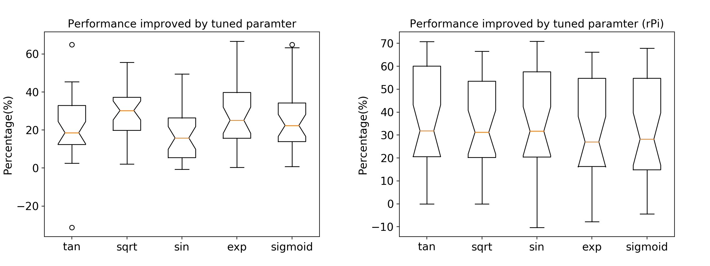

Automatic Empirical Tuning
( TODO: include more content)
What is Parameter Tuning
Recent research work on parameter tuning mostly focus on hyper-parameter tuning, such as optimising the parameters of stochastic gradient in machine learning applications. However, tuning code and parameters in low-level numerical libraries is of the same importance. For example, Automatically Tuned Linear Algebra Software (ATLAS) and the recent Intel Math Kernel Library (MKL) are both software libraries of optimised math routines for science and engineering computation. They are widely used in many popular high-level platforms such as Matlab and TensorFlow. One of the reasons these libraries can provide optimal performance is that they have adopted the paradigm of Automated Empirical Optimisation of Software, or AEOS. That is, a library chooses the best method and parameter to use on a given platform to do a required operation. One highly optimised routine may run much faster than a naively coded one. Optimised code is usually platform- and hardware-specific, but an optimised routine on one machine could perform badly on the other. Though Owl currently does not plan to improve the low-level libraries it depends on, as an initial endeavour to apply the AEOS paradigm in Owl, one ideal tuning point is the parameters of OpenMP used in Owl.
Why Parameter Tuning in Owl
Currently many computers contain shared memory multiprocessors. OpenMP is used in key operations in libraries such as Eigen and MKL. Owl has also utilised OpenMP on many mathematical operations to boost their performance by threading calculation. For example, the figure below shows that when I apply the sine function on an ndarray in Owl, on a 4-core CPU MacBook, the OpenMP version only takes about a third of the execution time compared with the non-OpenMP version.

However, performance improvement does not come for free. Overhead of using OpenMP comes from time spent on scheduling chunks of work to each thread, managing locks on critical sections, and startup time of creating threads, etc. Therefore, when the input ndarray is small enough, these overheads might overtake the benefit of threading. What is a suitable input size to use OpenMP then? This question would be easy to solve if there is one single suitable input size threshold for every operation, but that’s not the case.
In a small experiment, I compare the performance of two operations, abs (calculate absolute value) and sin, in three cases: running them without using OpenMP, with 2 threads OpenMP, and with 4 threads OpenMP.

The result above shows that, with growing input size, for sine operation, the OpenMP version outperforms the non-OpenMP version at a size of less than 1000, but for abs operation, that cross point is at about 1,000,000. The complexity of math operations varies greatly, and the difference is even starker when compare their performance on different machines. This issue becomes more complex when considered in real applications such as deep neural networks, where one needs to deal with operations of vastly different complexity and input sizes. Thus one fixed threshold for several operations is not an ideal solution. Considering these factors, I need a fine-grained method to decide a suitable OpenMP threshold for each operation.
How to tune OpenMP parameters
Towards this end, I implement the AEOS module in Owl. The idea is to add a tuning phase before compiling and installing Owl, so that each operation learns a suitable threshold parameter to decide if OpenMP should be used or not, depending on input size. The key idea of parameter tuning is simple. I implement two versions of each operation, one using OpenMP and the other not. I then measure their execution time for various sizes of input. Each measurement is repeated multiple times, and to reduce the effect of outliers, only the values that are within first and third percentiles are used. After removing outliers, regression is performed to find a suitable input size threshold. According to our initial experiment, linear regression is fit to estimate the OpenMP parameters here.
Since this tuning phase is executed before compiling Owl, the AEOS module is independent of Owl, and all necessary implementation is coded separately to ensure that future changes of Owl do not affect the AEOS module itself. The tuned parameters then need to be passed to Owl. When the OpenMP switch is turned on, the AEOS module generates a C header file which contains the definition of macros, each of which defines a threshold for one operation. When this header file is not generated, pre-defined default macro values are used instead. After that, Owl is compiled with this header file and uses these tuned parameters in its math operations. The tuning phase only needs to be performed once on each machine during installation.
The design of the AEOS module focuses on keeping tuning simple, effective, and flexible. Each operation is implemented as a single OCaml module, so that support for new operations can be easily added. The interface of such a module is shown as below.
module Sin : sig
type t = {
mutable name : string;
mutable param : string;
mutable value : int;
mutable input : int array array;
mutable y : float array
}
(* Tuner type definition. *)
val make : unit -> t
(* Create the tuner. *)
val tune : t -> unit
(* Tuning process. *)
val save_data : t -> unit
(* Save tuned data to csv file for later analysis. *)
val to_string : t -> string
(* Convert the tuned parameter(s) to string to be written on file *)
endI expect that tuning does not have to be only about OpenMP parameters, and that different regression methods could be used in the future. For example, the Theil–Sen estimator can be plugged in for parameter estimation if necessary. In each module, arbitrary tuning procedures can be plugged in as long as the interface is satisfied.
The AEOS module is implemented in such a way that brings little interference to the main Owl library. Code can be viewed in this pull request, and has been merged into the main branch of Owl. You only need to switch the ENABLE OPENMP flag from 0 to 1 in the dune file to try this feature. To evaluate the performance of tuned OpenMP thresholds, I need a metric to compare them. One metric to compare two thresholds is proposed as below. I generate a series of ndarrays, whose sizes grow by certain steps until they reach a given maximum number, e.g. 1,000,000 used in the experiment below. Note that only input sizes that fall between these two thresholds are chosen to be used. I then calculate the performance improvement ratio of the OpenMP version function over the non-OpenMP version on these chosen ndarrays. The ratios are added up, and then amortised by the total number of ndarrays. Hereafter I use this averaged ratio as performance metric.
Make a Difference
The table below presents the tuned threshold values of a five operations on a MacBook with a 1.1GHz Intel Core m3 CPU and a Raspberry Pi 3B. We can see that they vary across different operations and different machines, depending on their computation complexity. For example, on MacBook, the tuning result is “max int”, which means that for the relatively simple square root calculation OpenMP should not be used, but that’s not the case on Raspberry Pi. Also, note that the less powerful Raspberry Pi tends to get lower thresholds.
| Platform | \(tan\) | \(sqrt\) | \(sin\) | \(exp\) | \(sigmoid\) |
| MacBook | 1632 | max_int | 1294 | 123 | 1880 |
| Raspberry Pi | 1189 | 209 | 41 | 0 | 0 |
I then evaluate the performance improvement after applying AEOS. I compare each generated parameter with 30 random generated thresholds. These measured average ratios are then presented as a box plot, as shown in the figure below.

It can be observed that in general more than 20% average performance improvement can be expected on the MacBook. The result on Raspberry Pi shows a larger deviation but also a higher performance gain (about 30% on average). One reason of this difference could be that a suitable threshold on Raspberry Pi tends to be smaller, leading to a larger probability to outperform a randomly generated value. Note that I cannot proclaim that the tuned parameters are always optimal, since the figure shows that in some rare cases where the improvement percentages are minus, the randomly found values indeed perform better. Also, the result seems to suggest that AEOS can provide a certain bound, albeit a loose one, on the performance improvement, regardless of the type of operation. These interesting issues require further investigation.